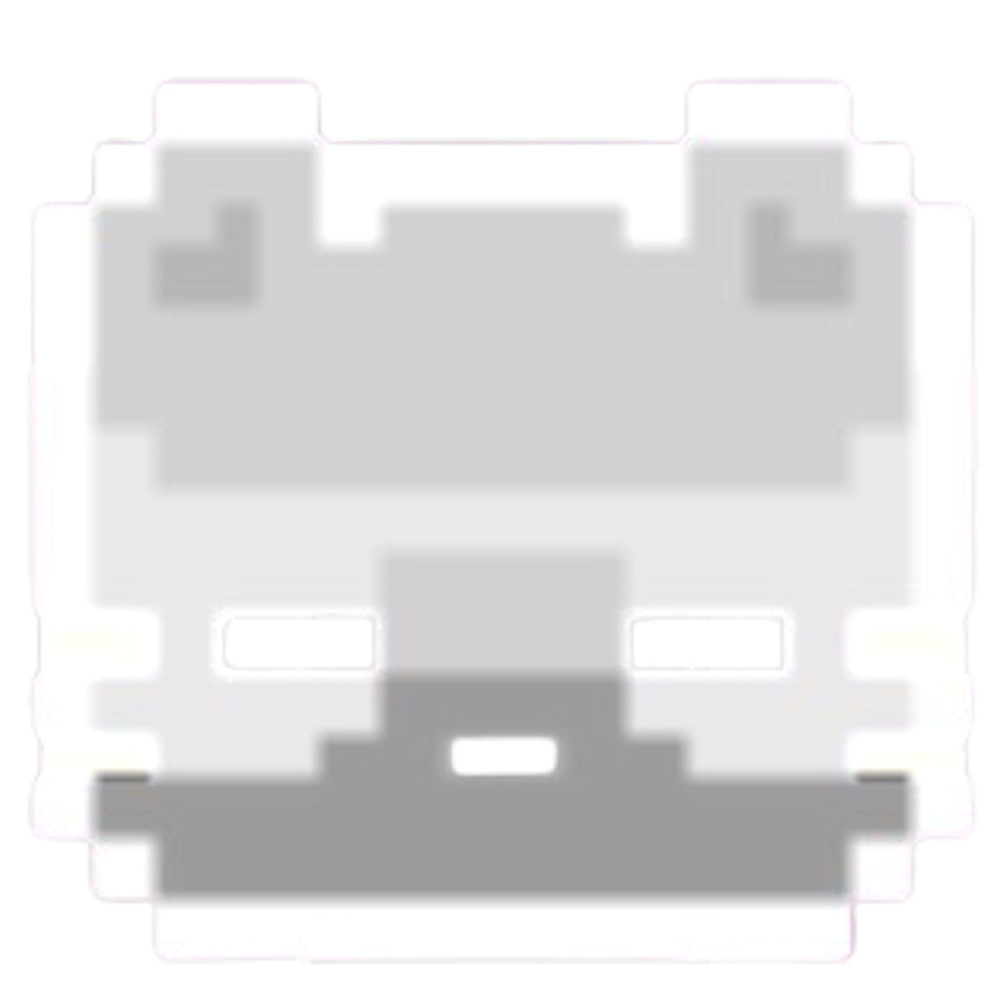

Este es un juego en el que conduces un auto y debes llegar a la meta antes de que se acabe el tiempo, evitando chocar con otros autos, ¡que te diviertas!
JugarColoron
Este estuvo difícil para mí, a ver qué tan lejos llevas la bola mientras la haces coincidir en color con la barra de abajo; yo no pasé de cinco, luego me cuentas tú.
Jugar

Copycat
En este juego debes tratar de llevar al gatito (y su copia) a sus distintas metas, con el mismo control para ambos. Este me gustó mucho, debió tener más niveles.
Jugar

Pac-Man
¿Crees que te debería explicar este juego? Supongo que no, pero me quedará espacio, así que solo diré que extraño jugar contigo, no importa el juego que fuese.
JugarFlappy Dino
He aquí una versión de Flappy Bird, creo que sabrás cuál, porque sino, te enterarás una vez lo juegues. Yo no pude con este juego, ya me dirás tu si te gusta.
JugarTetris
Te dejo este famoso juego que consiste en acomodar bloques de distintas formas para tratar de eliminar filas antes de que se sitúen tan alto que pierdas.
Jugar

Ping Pong
Para este juego vas a necesitar a un buen oponente. Uno manejará las teclas de las flechas arriba y abajo, mientras que el otro usará las teclas 'q' y 'a'.
JugarArkanoid
Aquí otro juego de arcade para que te diviertas. Tú debes ser mejor que yo jugando, lo aseguro; tampoco pude con este. Inténtalo y luego te burlas.
Jugar

Gorillas
Este es de mis favoritos, algún día lo quiero jugar contigo. Son dos gorilas entre rascacielos que se arrojan un objeto de forma intermitente con el objetivo de tocar al otro.
JugarTower Blocks
Para jugar a este juego solo deberás acomodar los bloques para formar una torre, de manera que se pierda la menor parte de ellos y así lograr hacer la torre más alta.
Jugar